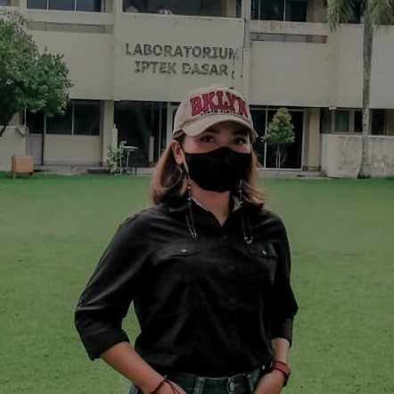

Desa Pondok Wonolelo adalah sebuah desa di Kabupaten Sleman, DIY yang terletak sekitar 15 km sebelah timur kota Yogyakarta. Desa ini terkenal dengan keindahan alamnya yang masih asri, sejuk dan hijau. Mayoritas penduduknya bermata pencaharian sebagai petani dan pedagang kecil.
Untuk mempromosikan mobilitas berkelanjutan, Kami telah menginisiasi pendirian rute pemberhentian sepeda (B.Cycl3Stop). Rute ini dirancang untuk memfasilitasi para pengendara sepeda dengan menyediakan tempat istirahat yang nyaman dan aman, serta akses ke tempat wisata lokal dan atraksi alam. Dengan adanya rute pemberhentian sepeda ini, Desa Pondok Wonolelo menjadi destinasi yang ramah sepeda, mengutamakan kelestarian lingkungan dan kesehatan masyarakat.
Prepared to Fulfill the 2023 Applied GIS Practicum Project Based

Reva Nur Ayu Safitri | Zainal Rio Aditia | Niken Ayu Safitri
Kelompok 3 Prak SIG Terapan - We are 6th Semester Geomatics Engineering students who are working on a project-based final project that implements material from lectures obtained for one semester.
Penginderaan Jauh Survei Terestris Fotogrametri Sistem Informasi Geografis
Detailed Situation Maps acquired using the Total Station instrument and combined from several Areas of Interest (Data Detil Situasi)
An Orthophoto Maps acquired using drone instruments during Geomatics'20 did the Work Camp (Data Foto Udara)
Is a community custom, and a celebration of the Wonolelo people. Source: Wikipedia (Budaya Saparan Desa Wonolelo)
Is a Google Maps link to the historic and iconic location of Wonolelo Village. Source: Google Maps (Masjid Ki Ageng Wonolelo)
Sebuah Web GIS yang kami beri nama B.Cycl3Stop yang memadukan platform Circle Geo dan QGIS untuk menghasilkan konsep Network Analyst dari satu rute pemberhentian sepeda ke pemberhentian lainnya.